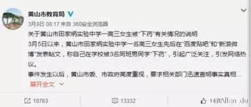
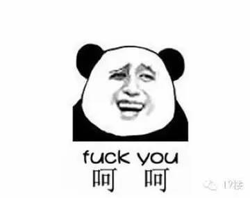
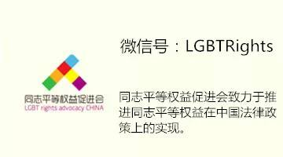

联合声明 | 校园欺凌不能随便了事

关于“高三女生被下春药”一事的联合声明
近日，“高三女生被下春药”事件在网络出现，并迅速引起关注。消息称，一高三女生因同性恋身份被同班男生下春药，并受到进一步的威胁。经有关媒体的采访报道，确认此事属实，并确定事发地点在安徽省黄山市田家炳中学。
在引起网络的广泛关注之后，当事女生称，“事件已得到妥善处理”，删除原发微博。黄山市公安局的官微也发出消息，称调查结束，“学校将根据校规对涉事学生做进一步严肃处理。”而田家炳中学和黄山市教育部门一直没有表态，更没有对事件做出公开的说明。
事件发生后，我们——一些服务于性少数 、妇女和致力于青少年教育的组织——一直在关注进一步的发展。我们注意到，像很多校园霸凌事件一样，这次事件的起因是对于性与性别的歧视。而事件中有足够的证据让我们相信，这不是个别人的行为，而是一起校园集体霸凌事件，它反映了校园内的暴力非常严重，也反映了田家炳中学并不是一所对女性、性少数同学友善的中学。
（志愿者向黄山市教育局、公安局及田家炳中学寄联署信）
这并不是孤例。2012年，同城青少年资源中心 曾联合其他组织，针对420多名性少数青少年开展了一项校园内基于性向、性别身份的欺凌调查，结果显示：44%曾遭到同学、老师起绰号、嘲笑、恶意的玩笑等言语攻击；22%曾遇到同学、老师将其性倾向等隐私曝光的恶意传播；5%曾经遭到来自同学的敲诈、勒索，威胁其生命和财产安全；并有10%曾被同学拳打脚踢、掌掴拍打、推撞绊倒、拉扯头发等；7.6%遭遇过来自同学和老师的性骚扰，如脱光衣服、碰触隐私部位、强拍裸照等。而因为缺乏良好的校园、社会舆论环境，当遭遇到欺凌时，只有33%的被调查者寻求过外界支持。
这些数据和大量事实都说明，如果止步于现有的结果，一味息事宁人，不正视校园暴力的根源，不正视对于女性和性少数者的歧视，并做出相应的教育和改进，我们有理由怀疑，事件的处理是否公正？学校是否为学生树立起了基本的是非观念？如果不是，那么现有的问题并未真正解决，类似的伤害必将再次发生。
为此，我们强烈谴责这次霸凌事件，并严正要求田家炳中学，公开对此事相关加害人的处理措施；要求相关加害人、纵容支持加害人的相关人士公开道歉，公开道歉内容；学校应在全校大会和官方微博上，声明支持性别平等和性取向平等、反对校园霸凌和性别暴力的立场；重新制定反对校园霸凌的有效措施、应对机制及完善的救助方法，并向全校师生进行普及教育、向全体家长及社会各界进行公开。
我们呼吁司法机关，校园霸凌是一种犯罪行为，应该在法律层面得到公正的处理。因此，我们要求黄山市公安局更加详细地公开相关加害人年龄、加害手段、目的和加害后果等信息，向公众证明对此案的处理是符合我国法律规定的。
我们呼吁教育部门及各学校、教育机构建立反对校园霸凌有效机制，进行多元、平等的性教育，建立安全健康的校园氛围。
我们也呼吁社会公众，关注校园霸凌。人人生而平等，每一个青少年的性、性别及任何身份，都不应成为歧视和暴力的理由。
我们要特别对当事女学生、及其他校园霸凌的受害者呼吁：我们理解你的处境。事情发生的时候，也许你会认为自己孤立无援，只能默默忍耐。但是你并不是一个人，我们将与你站在一起。我们鼓励校园霸凌、性别和性取向歧视、性骚扰和性侵害的受害者向我们投诉你的遭遇，包括但不限于以下情形：
校园暴力；
露骨的性别歧视言论和行为；
来自他人的强迫的身体接触和性行为要求；
因为外貌、体型、气质、性取向和性别等原因，遭受暴力、羞辱和孤立；
及其他不公平的对待。
此声明的印刷版本，将寄送黄山市教育局、黄山市公安局和黄山市田家炳中学，并依照相关法律法规，申请相关信息的公开。
联署机构（排名不分先后）：
新媒体女性网络
同语
同志平等权益促进会
同城青少年资源中心
鉴湖沙龙
乐点杂志
女创公社
北京酷比特小组
Yummy女性愉悦社区
les+
上海女爱
武汉同行同志中心
杭州酷儿论坛
同志之声
同性恋亲友会
向阳花开·杭州LGBT
江西高校彩虹联盟
酷拉时报
北京同志中心
广州六色彩虹公益小组
贵州黔程工作组
性别平等网
北京女同志中心
北京纪安德咨询中心
西安Relax同学社
北京佐佑中心
广州市海珠区山泉文化艺术剧社
合肥青卫公共健康服务中心
智同西安公益小组
乐窝·南昌拉拉小组
雪莲女爱
同异
智同公益
大连Lessea公益小组
重庆milk公益小组
智同公益
爱之援助
女友组
婊酱FM
苏大青春同伴社
苏州LESGO
2016年3月8日

小编加记，8日黄山市教育局发了条微博回应此事，急着盖棺定论之余，还如此歧视：“不能未经调查核实就对当事女生随意冠以“同性恋”等字眼，这会给她带来更大的二次伤害。”
又要 天啦噜 ~~~

“教育局宁愿承认学生下药了、犯事儿了，也不愿提及“女同性恋”的身份。宁愿承认学校和教育管理漏洞和不当，也不愿承认学校有“同性恋”。同性恋到底有多可耻。难道比教育失败更可耻？比长期欺凌（暴力）同学行为可耻？无论是性还是同性恋，再次被污名、边缘和漠视。那么，公然否认当事人被欺凌的原因，是谁在二次伤害？”
----公民豆豆在其文章《五问黄山市教育局》中问得如此淋漓尽致，点击【阅读原文】查看吧！
